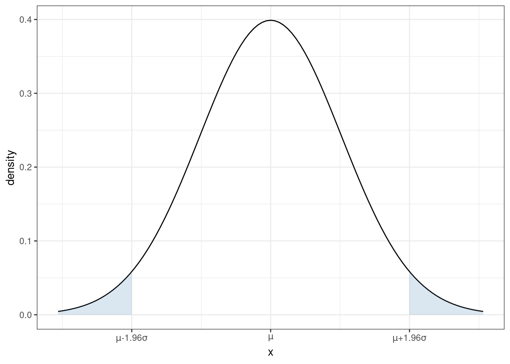
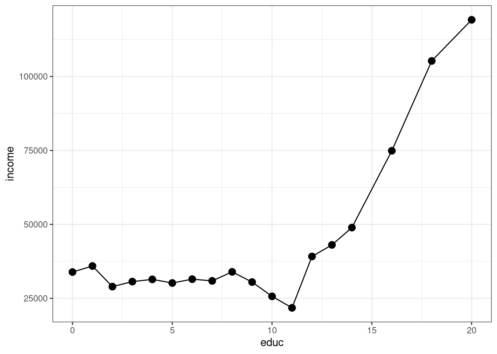

5 Expectation, Variance, and More
\[ \newcommand{\E}{\mathbb{E}} \renewcommand{\P}{\textrm{P}} \let\L\relax \newcommand{\L}{\textrm{L}} %doesn't work in .qmd, place this command at start of qmd file to use it \newcommand{\F}{\textrm{F}} \newcommand{\var}{\textrm{var}} \newcommand{\cov}{\textrm{cov}} \newcommand{\corr}{\textrm{corr}} \newcommand{\Var}{\mathrm{Var}} \newcommand{\Cov}{\mathrm{Cov}} \newcommand{\Corr}{\mathrm{Corr}} \newcommand{\sd}{\mathrm{sd}} \newcommand{\se}{\mathrm{s.e.}} \newcommand{\T}{T} \newcommand{\indicator}[1]{\mathbb{1}\{#1\}} \newcommand\independent{\perp \!\!\! \perp} \newcommand{\N}{\mathcal{N}} \]
5.1 Expected Values
SW 2.2
The expected value of some random variable \(X\) is its (population) mean and is written as \(\E[X]\). [I tend to write \(\E[X]\) for the expected value, but you might also see notation like \(\mu\) or \(\mu_X\) for the expected value.]
The expected value of a random variable is a feature of its distribution. In other words, if you know the distribution of a random variable, then you also know its mean.
The expected value is a measure of central tendency (alternative measures of central tendency are the median and mode).
Expected values are a main concept in the course (and in statistics/econometrics more generally). I think there are two main reasons for this:
Unlike a cdf, pdf, or pmf, the expected value is a single number. This means that it is easy to report. And, if you only knew one feature (at least a feature that that only involves a single number) of the distribution of some random variable, probably the feature that would be most useful to know would be the mean of the random variable.
Besides that, there are some computational reasons (we will see these later) that the mean can be easier to estimate than, say, the median of a random variable
If \(X\) is a discrete random variable, then the expected value is defined as
\[ \E[X] = \sum_{x \in \mathcal{X}} x f_X(x) \]
If \(X\) is a continuous random variable, then the expected value is defined as
\[ \E[X] = \int_{\mathcal{X}} x f_X(x) \, dx \] Either way, you can think of these as a weighted average of all possible realizations of the random variable \(X\) where the weights are given by the probability of \(X\) taking that particular value. This may be more clear with an example…
Example: Suppose that \(X\) is the outcome from a roll of a die. Then, its expected value is given by
\[ \begin{aligned} \E[X] &= \sum_{x=1}^6 x f_X(x) \\ &= 1\left(\frac{1}{6}\right) + 2\left(\frac{1}{6}\right) + \cdots + 6\left(\frac{1}{6}\right) \\ &= 3.5 \end{aligned} \]
5.2 Variance
SW 2.2
The next most important feature of the distribution of a random variable is its variance. The variance of a random variable \(X\) is a measure of its “spread”, and we will denote it \(\Var(X)\) [You might also sometimes see the notation \(\sigma^2\) or \(\sigma_X^2\) for the variance.] The variance is defined as
\[ \Var(X) := \E\left[ (X - \E[X])^2 \right] \] Before we move forward, let’s think about why this is a measure of the spread of a random variable.
\((X-\E[X])^2\) is a common way to measure the “distance” between \(X\) and \(\E[X]\). It is always positive (whether \((X - \E[X])\) is positive or negative) which is a good feature for a measure of distance to have. It is also increasing in \(|X-\E[X]|\) which also seems a requirement for a reasonable measure of distance.
Then, the outer expectation averages the above distance across the distribution of \(X\).
An alternative expression for \(\Var(X)\) that is often useful in calculations is
\[ \Var(X) = \E[X^2] - \E[X]^2 \]
Sometimes, we will also consider the standard deviation of a random variable. The standard deviation is defined as
\[ \textrm{sd}(X) := \sqrt{\Var(X)} \] You might also see the notation \(\sigma\) or \(\sigma_X\) for the standard deviation.
The standard deviation is often easier to interpret than the variance because it has the same “units” as \(X\). Variance “units” are squared units of \(X\).
That said, variances more often show up in formulas/derivations this semester.
5.3 Mean and Variance of Linear Functions
SW 2.2
For this part, suppose that \(Y=a + bX\) where \(Y\) and \(X\) are random variables while \(a\) and \(b\) are fixed constants.
Properties of Expectations
\(\E[a] = a\) [In words: the expected value of a constant is just the constant. This holds because there is nothing random about \(a\) — we just know what it is.]
\(\E[bX] = b\E[X]\) [In words: the expected value of a constant times a random variable is equal to the constant times the expected value of the random variable. We will use this property often this semester.]
\(\E[a + bX] = a + b\E[X]\) [In words: expected values “pass through” sums. We will use this property often this semester.]
You’ll also notice the similarity between the properties of summations and expectations. This is not a coincidence — it holds because expectations are defined as summations (or very closely related, as integrals).
Properties of Variance
\(\Var(a) = 0\) [In words: the variance of a constant is equal to 0.]
\(\Var(bX) = b^2 \Var(X)\) [In words: A constant can come out of the variance, but it needs to be squared first.]
\(\Var(a + bX) = \Var(bX) = b^2 \Var(X)\)
Example: Later on in the semester, it will sometimes be convenient for us to “standardize” some random variables. We’ll talk more about the reason to do this later, but for now, I’ll just give the typical formula for standardizing a random variable and we’ll see if we can figure out what the mean and variance of the standardized random variable are.
\[ Y = \frac{ X - \E[X]}{\sqrt{\Var(X)}} \] Just to be clear here, we are standardizing the random variable \(X\) and calling its standardized version \(Y\). Let’s calculate its mean
\[ \begin{aligned} \E[Y] &= \E\left[ \frac{X - \E[X]}{\sqrt{\Var(X)}} \right] \\ &= \frac{1}{\sqrt{\Var(X)}} \E\big[ X - \E[X] \big] \\ &= \frac{1}{\sqrt{\Var(X)}} \left( \E[X] - \E\big[\E[X]\big] \right) \\ &= \frac{1}{\sqrt{\Var(X)}} \left( \E[X] - \E[X] \right) \\ &= 0 \end{aligned} \] where the first equality just comes from the definition of \(Y\), the second equality holds because \(1/\sqrt{\Var(X)}\) is a constant and can therefore come out of the expectation, the third equality holds because the expectation can pass through the difference, the fourth equality holds because \(\E[X]\) is a constant and therefore \(\E\big[\E[X]\big] = \E[X]\), and the last equality holds because the term in parentheses is equal to 0. Thus, the mean of \(Y\) is equal to 0. Now let’s calculate the variance.
\[ \begin{aligned} \Var(Y) &= \Var\left( \frac{X}{\sqrt{\Var(X)}} - \frac{\E[X]}{\sqrt{\Var(X)}} \right) \\ &= \Var\left( \frac{X}{\sqrt{\Var(X)}}\right) \\ &= \left( \frac{1}{\sqrt{\Var(X)}} \right)^2 \Var(X) \\ &= \frac{\Var(X)}{\Var(X)} \\ &= 1 \end{aligned} \] where the first equality holds by the definition of \(Y\), the second equality holds because the second term is a constant and by Variance Property 3 above, the third equality holds because \((1/\sqrt{\Var(X)})\) is a constant and can come out of the variance but needs to be squared, the fourth equality holds by squaring the term on the left, and the last equality holds by cancelling the numerator and denominator.
Therefore, we have showed that the mean of the standardized random variable is 0 and its variance is 1. This is, in fact, the goal of standardizing a random variable — to transform it so that it has mean 0 and variance 1 and the particular transformation given in this example is one that delivers a new random variable with these properties.
5.4 Conditional Expectations
SW 2.3
As we discussed earlier, in economics, we often want to learn about the relationship between several different variables. Previously, we had discussed joint pmfs/pdfs/cdfs, and these are useful to know about. However, they are often hard to work with in practice. For example, if you have two random variables, visualizing their joint distribution would involve interpreting a 3D plot which is often challenging in practice. If you had more than two random variables, then fully visualizing their joint distribution would not be possible. Therefore, we will typically look at summaries of the joint distribution. Probably the most useful one is the conditional expectation that we study in this section; in fact, we will spend much of the semester trying to estimate conditional expectations.
For two random variables, \(Y\) and \(X\), the conditional expectation of \(Y\) given \(X=x\) is the mean value of \(Y\) conditional on \(X\) taking the particular value \(x\). In math, this is written
\[ \E[Y|X=x] \]
One useful way to think of a conditional expectation is as a function of \(x\). For example, suppose that \(Y\) is a person’s yearly income and \(X\) is a person’s years of education. Clearly, mean income can change for different values of education.
Conditional expectations will be a main focus of ours throughout the semester
An extremely useful property of conditional expectations is that they generalize from the case with two variables to the case with multiple variables. For example, suppose that we have four random variables \(Y\), \(X_1\), \(X_2\), and \(X_3\). It makes sense to think about \[ \E[Y|X_1=x_1, X_2=x_2, X_3=x_3] \] which is the expected value of \(Y\) conditional on \(X_1\) taking the particular value \(x_1\), \(X_2\) taking the particular value \(x_2\), and \(X_3\) taking the particular value \(x_3\). Just like before, you can think of this as a function, in the sense that changing any of \(x_1\), \(x_2\), and/or \(x_3\) gives a new conditional mean.
5.5 Law of Iterated Expectations
SW 2.3
Another important property of conditional expectations is called the law of iterated expectations. It says that
\[ \E[Y] = \E\big[ \E[Y|X] \big] \] In words: The expected value of \(Y\) is equal to the expected value (this expectation is with respect to \(X\)) of the conditional expectation of \(Y\) given \(X\).
This may seem like a technical property, but I think the right way to think about the law of iterated expectations is that there is an inherent relationship between unconditional expectations and conditional expectations. In other words, although conditional expectations can vary arbitrarily for different values of \(X\), if you know what the conditional expectations are, the overall expected value of \(Y\) is fully determined.
A simple example is one where \(X\) takes only two values. Suppose we are interested in mean birthweight (\(Y\)) for children of mother’s who either drank alcohol during their pregnancy (\(X=1\)) or who didn’t drink alcohol during their pregnancy (\(X=0\)). Suppose the following (just to be clear, these are completely made up numbers), \(\E[Y|X=1] = 7\), \(\E[Y|X=0]=8\) \(\P(X=1) = 0.1\) and \(\P(X=0)=0.9\). The law of iterated expectation says that \[ \begin{aligned} \E[Y] &= \E\big[ \E[Y|X] \big] \\ &= \sum_{x \in \mathcal{X}} \E[Y|X=x] \P(X=x) \\ &= \E[Y|X=0]\P(X=0) + \E[Y|X=1]\P(X=1) \\ &= (8)(0.9) + (7)(0.1) \\ &= 7.9 \end{aligned} \]
The law of iterated expectations still applies in more complicated cases (e.g., \(X\) takes more than two values, \(X\) is continuous, or \(X_1\),\(X_2\),\(X_3\)) but the intuition is still the same.
5.6 Covariance
SW 2.3
The covariance between two random variables \(X\) and \(Y\) is a masure of the extent to which they “move together”. It is defined as
\[ \Cov(X,Y) := \E[(X-\E[X])(Y-\E[Y])] \] A natural first question to ask is: why does this measure how \(X\) and \(Y\) move together. Notice that covariance can be positive or negative. It will tend to be negative if big values of \(X\) (so that \(X\) is above its mean) tend to happen at the same time as big values of \(Y\) (so that \(Y\) is above its mean) while small values of \(X\) (so that \(X\) is below its mean) tend to happen at the same time as small values of \(Y\) (so that \(Y\) is below its mean).
An alternative and useful expression for covariance is \[ \Cov(X,Y) = \E[XY] - \E[X]\E[Y] \] Relative to the first expression, this one is probably less of a natural definition but often more useful in mathematical problems.
One more thing to notice, if \(X\) and \(Y\) are independent, then \(\Cov(X,Y) = 0\).
5.7 Correlation
SW 2.3
It’s often hard to interpret covariances directly (the “units” are whatever the units of \(X\) are times the units of \(Y\)), so it is common to scale the covariance to get the correlation between two random variables:
\[ \Corr(X,Y) := \frac{\Cov(X,Y)}{\sqrt{\Var(X)} \sqrt{\Var(Y)}} \] The correlation has the property that it is always between \(-1\) and \(1\).
If \(\Corr(X,Y) = 0\), then \(X\) and \(Y\) are said to be uncorrelated.
5.8 Properties of Expectations/Variances of Sums of RVs
SW 2.3
Here are some more properties of expectations and variances when there are multiple random variables. For two random variables \(X\) and \(Y\)
\(\E[X+Y] = \E[X] + \E[Y]\)
\(\Var(X+Y) = \Var(X) + \Var(Y) + 2\Cov(X,Y)\)
The first property is probably not surprising — expectations continue to pass through sums. The second property, particularly the covariance term, needs more explanation. To start with, you can just plug \(X+Y\) into the definition of variance and (with a few lines of algebra) show that the second property is true. But, for the intuition, let me explain with an example. Suppose that \(X\) and \(Y\) are rolls of two dice, but somehow these dice are positively correlated with each other — i.e., both rolls coming up with high numbers (and low numbers) are more likely than with regular dice. Now, think about what the sum of two dice rolls can be: the smallest possible sum is 2 and other values are possible up to 12. Moreover, the smallest and largest possible sum of the rolls (2 and 12), which are farthest away from the mean value of 7, are relatively uncommon. You have to roll either \((1,1)\) or \((6,6)\) to get either of these and the probability of each of those rolls is just \(1/36\). However, when the dice are positively correlated, the probability of both rolls being very high or very low becomes more likely — thus, since outcomes far away from the mean become more likely, the variance increases.
One last comment here is that, when \(X\) and \(Y\) are independent (or even just uncorrelated), the formula for the variance does not involve the extra covariance term because it is equal to 0.
These properties for sums of random variables generalize to the case with more than two random variables. For example, suppose that \(Y_1, \ldots, Y_n\) are random variables, then
\(\E\left[ \displaystyle \sum_{i=1}^n Y_i \right] = \displaystyle \sum_{i=1}^n \E[Y_i]\)
If \(Y_i\) are mutually independent, then \(\Var\left( \displaystyle \sum_{i=1}^n Y_i \right) = \displaystyle \sum_{i=1}^n \Var(Y_i)\)
Notice that the last line does not involve any covariance terms, but this is only because of the caveat that the \(Y_i\) are mutually independent. Otherwise, there would actually be tons of covariance terms that would need to be accounted for.
5.9 Normal Distribution
SW 2.4
You probably learned about a lot of particular distributions of random variables in your Stats class. There are a number of important distributions:
Normal
Binomial
t-distribution
F-distribution
Chi-squared distribution
others
SW discusses a number of these distributions, and I recommend that you read/review those distributions. For us, the most important distribution is the Normal distribution [we’ll see why a few classes from now].
If a random variable \(X\) follows a normal distribution with mean \(\mu\) and variance \(\sigma^2\), we write
\[ X \sim N(\mu, \sigma^2) \] where \(\mu = \E[X]\) and \(\sigma^2 = \Var(X)\).
Importantly, if we know that \(X\) follows a normal distribution, its entire distribution is fully characterized by its mean and variance. In other words, if \(X\) is normally distributed, and we also know its mean and variance, then we know everything about its distribution. [Notice that this is not generally true — if we did not know the distribution of \(X\) but knew its mean and variance, we would know two important features of the distribution of \(X\), but we would not know everything about its distribution.]
You are probably familiar with the pdf of a normal distribution — it is “bell-shaped”.
From the figure, you can see that a normal distribution is unimodal (there is just one “peak”) and symmetric (the pdf is the same if you move the same distance above \(\mu\) as when you move the same distance below \(\mu\)). This means that, for a random variable that follows a normal distribution, its median and mode are also equal to \(\mu\).
From the plot of the pdf, we can also tell that, if you make a draw from \(X \sim N(\mu,\sigma^2)\), the most likely values are near the mean. As you move further away from \(\mu\), it becomes less likely (though not impossible) for a draw of \(X\) to take that value.
Recall that we can calculate the probability that \(X\) takes on a value in a range by calculating the area under the curve of the pdf. For each shaded region in the figure, there is a 2.5% chance that \(X\) falls into that region (so the probability of \(X\) falling into either region is 5%). Another way to think about this is that there is a 95% probability that a draw of \(X\) will be in the region \([\mu-1.96\sigma, \mu+1.96\sigma]\). Later, we we talk about hypothesis testing, this will be an important property.
Earlier, we talked about standardizing random variables. If you know that a random variable follows a normal distribution, it is very common to standardize it. In particular notice that, if you create the standardized random variable
\[ Z := \frac{X - \mu}{\sigma} \quad \textrm{then} \quad Z \sim N(0,1) \] If you think back to your probability and statistics class, you may have done things like calculating a p-value by looking at a “Z-table” in the back of a textbook (I’m actually not sure if this is still commonly done because it is often easier to just do this on a computer, but, back in “my day” this was a very common exercise in statistics classes). Standardizing allows you to look at just one table for any normally distributed random variable that you could encounter rather than requiring you to have different Z table for each value of \(\mu\) and \(\sigma^2\).
5.10 Coding
To conclude this section, we’ll use R to compute the features of the joint distribution of income and education that we have discussed above.
# create vectors of income and educ
income <- us_data$incwage
educ <- us_data$educ
# mean of income
mean(income)[1] 58605.75# mean of education
mean(educ)[1] 13.96299# variance
var(income)[1] 4776264026var(educ)[1] 8.345015# standard deviation
sd(income)[1] 69110.52sd(educ)[1] 2.888774# covariance
cov(income,educ)[1] 63766.72# correlation
cor(income, educ)[1] 0.31940115.11 Lab 2: Basic Plots
Related Reading: IDS 9.4 (if you are interested, you can read IDS Chapters 6-10 for much more information about plotting in R)
In this lab, I’ll introduce you to some basic plotting. Probably the most common type of plot that I use is a line plot. We’ll go for trying to make a line plot of average income as a function of education.
To start with, I’ll introduce you to R’s ggplot2 package. This is one of the most famous plot-producing packages (not just in R, but for any programming language). The syntax may be somewhat challenging to learn, but I think it is worth it to exert some effort here.
Side Comment: Base R has several plotting functions (e.g., plot). Check IDS 2.15 for an introduction to these functions. These are generally easier to learn but less beautiful than plots coming from ggplot2.
# load ggplot2 package
# (if you haven't installed it, you would need to do that first)
library(ggplot2)
# load dplyr package for "wrangling" data
library(dplyr)# arrange data
plot_data <- us_data %>%
group_by(educ) %>%
summarize(income=mean(incwage))
# make the plot
ggplot(data=plot_data,
mapping=aes(x=educ,y=income)) +
geom_line() +
geom_point(size=3) +
theme_bw()
Let me explain what’s going on here piece-by-piece. Let’s start with this code
# arrange data
plot_data <- us_data %>%
group_by(educ) %>%
summarize(income=mean(incwage))At a high-level, making plots often involves two steps — first arranging the data in the “appropriate” way (that’s this step) and then actually making the plot.
This is “tidyverse-style” code too — in my view, it is a little awkward, but it is also common so I think it is worth explaining here a bit.
First, the pipe operator, %>% takes the thing on the left of it and applies the function to the right of it. So, the line us_data %>% group_by(educ) takes us_data and applies the function group_by to it, and what we group by is educ. That creates a new data frame (you could just run that code and see what you get). The next line takes that new data frame and applies the function summarize to it. In this case, summarize creates a new variable called income that is the mean of the column incwage and it is the mean by educ (since we grouped by education in the previous step).
Take a second and look through what has actually been created here. plot_data is a new data frame, but it only has 18 observations — corresponding to each distinct value of education in the data. It also has two columns, the first one is educ which is the years of education, and the second one is income which is the average income among individuals that have that amount of education.
An alternative way of writing the exact same code (that seems more natural to me) is
# arrange data
grouped_data <- group_by(us_data, educ)
plot_data <- summarize(grouped_data, income=mean(incwage))If you’re familiar with other programming languages, the second version of the code probably seems more familiar. Either way is fine with me — tidyverse-style seems to be trendy in R programming these days, but (for me) I think the second version is a little easier to understand. You can find long “debates” about these two styles of writing code if you happen to be interested…
Before moving on, let me mention a few other dplyr functions that you might find useful
filter— this is tidy version ofsubsetselect— selects particular columns of interest from your datamutate— creates a new variable from existing columns in your dataarrange— useful for sorting your data
Next, let’s consider the second part of the code.
# make the plot
ggplot(data=plot_data,
mapping=aes(x=educ,y=income)) +
geom_line() +
geom_point(size=3) +
theme_bw()The main function here is ggplot. It takes in two main arguments: data and mapping. Notice that we set data to be equal to plot_data which is the data frame that we just created. The mapping is set equal to aes(x=educ,y=income). aes stands for “aesthetic”, and here you are just telling ggplot the names of the columns in the data frame that should be on the x-axis (here: educ) and on the y-axis (here: income) in the plot. Also, notice the + at the end of the line; you can interpret this as saying “keep going” to the next line before executing.
If we just stopped there, we actually wouldn’t plot anything. We still need to tell ggplot what kind of plot we want to make. That’s where the line geom_line comes in. It tells ggplot that we want to plot a line. Try running the code with just those two lines — you will see that you will get a similar (but not exactly the same) plot.
geom_point adds the dots in the figure. size=3 controls the size of the points. I didn’t add this argument originally, but the dots were hard to see so I made them bigger.
theme_bw changes the color scheme of the plot. It stands for “theme black white”.
There is a ton of flexibility with ggplot — way more than I could list here. But let me give you some extras that I tend to use quite frequently.
In
geom_lineandgeom_point, you can add the extra argumentcolor; for example, you could trygeom_line(color="blue")and it would change the color of the line to blue.In
geom_line, you can change the “type” of the line by using the argumentlinetype; for example,geom_line(linetype="dashed")would change the line from being solid to being dashed.In
geom_line, the argumentsizecontrols the thickness of the line.The functions
ylabandxlabcontrol the labels on the y-axis and x-axisThe functions
ylimandxlimcontrol the “limits” of the y-axis and x-axis. Here’s how you can use these:# make the plot ggplot(data=plot_data, mapping=aes(x=educ,y=income)) + geom_line() + geom_point(size=3) + theme_bw() + ylim=c(0,150000) + ylab("Income") + xlab("Education")which will adjust the y-axis and change the labels on each axis.
Besides the line plot (using geom_line) and the scatter plot (using geom_point), probably two other types of plots that I make the most are
Histogram (using
geom_histogram) — this is how I made the plot of the pmf of education earlier in this chapterAdding a straight line to a plot (using
geom_ablinewhich takes inslopeandinterceptarguments) — we haven’t used this yet, but we will win once we start talking about regressionsIf you’re interested, here is a to a large number of different types of plots that are available using
ggplot: http://r-statistics.co/Top50-Ggplot2-Visualizations-MasterList-R-Code.html
5.12 In Case You’re Interested: Chebyshev’s Inequality
As discussed above, the standard deviation is a measure of the spread of a random variable that is in units that are easy to understand. But what exactly does it tell us about the spread of a random variable? One way to think about the spread of a random variable is to think about the probability that a random variable will take a value within a certain range. For example, when we talked about the normal distribution, we said that there is a 95% chance that a draw of a normally distributed random variable will be within 1.96 standard deviations of the mean. This is a very specific statement about the spread of a random variable.
But the claim that there is a 95% chance that a random variable will be within 1.96 standard deviations of its mean only holds for normally distributed random variables. Chebyshev’s Inequality provides a way to relate the standard deviation of a random variable to the probability that it will take a value within a certain range, for any random variable (i.e., the variable can follow essentially any distribution). Chebyshev’s Inequality says that, for any random variable \(X\) and any \(k > 0\), \[\begin{align*} \P\Big(\big|X - \E[X]\big| \geq k \cdot \sd(X) \Big) \leq \frac{1}{k^2} \end{align*}\] This holds for any \(k\), so let’s pick an interesting value and be a bit more specific. Suppose that \(k=2\). Then, Chebyshev’s Inequality says that the probability that a random variable will be more than 2 standard deviations away from its mean is less than or equal to \(1/4\). Let’s compare this to the case where we know that \(X\) follows a normal distribution. In that case, there’s a 95% chance that \(X\) will be within (essentially) 2 standard deviations of its mean; if we don’t know that \(X\) follows a normal distribution, then we can’t make as strong a statement, but we can say that at least 75% of the time, \(X\) will be within 2 standard deviations of its mean. You can try other values of \(k\) too.
I am not going to provide a proof of Chebyshev’s Inequality. However, it is not that complicated. It follows from another result called Markov’s Inequality, where the idea is basically that, if you know the mean of a random variable, it limits the probability that a random variable can take an extreme value. Chebyshev’s Inequality extends this idea to the case where you know the mean and standard deviation of a random variable.
5.13 Coding Questions
Run the following code to create the data that we will use in the problem
set.seed(1234) # setting the seed means that we will get the same results x <- rexp(100) # make 100 draws from an exponential distributionUse the
ggplot2package to plot a histogram ofx.For this question, we’ll use the data
fertilizer_2000. A scatter plot is a useful way to visualize 2-dimensional data. Use theggplot2package to make a scatter plot with crop yield (avyield) on the y-axis and fertilizer (avfert) on the x-axis. Label the y-axis “Crop Yield” and the x-axis “Fertilizer”. Do you notice any pattern from the scatter plot?
5.14 Extra Questions
Suppose that \(\E[X] = 10\) and \(\var(X) = 2\). Also, suppose that \(Y=5 + 9 X\).
What is \(\E[Y]\)?
What is \(\var(Y)\)?
Use the definition of variance to show that \(\Var(bX) = b^2 \Var(X)\) (where \(b\) is a constant and \(X\) is some random variable).
Suppose you are interested in average height of students at UGA. Let \(Y\) denote a student’s height; also let \(X\) denote a binary variable that is equal to 1 if a student is female. Suppose that you know that \(\E[Y|X=1] = 5' \,4''\) and that \(\E[Y|X=0] = 5' \,9''\) (and that \(\P(X=1) = 0.5\)).
What is \(\E[Y]\)?
Explain how the answer to part (a) is related to the Law of Iterated Expectations.
Consider a random variable \(X\) with support \(\mathcal{X} = \{2,7,13,21\}\). Suppose that it has the following pmf:
\[ \begin{aligned} f_X(2) &= 0.5 \\ f_X(7) &= 0.25 \\ f_X(13) &= 0.15 \\ f_X(21) &= ?? \end{aligned} \]
What is \(f_X(21)\)? How do you know?
What is the expected value of \(X\)? [Show your calculation.]
What is the variance of \(X\)? [Show your calculation.]
Calculate \(F_X(x)\) for \(x=1\), \(x=7\), \(x=8\), and \(x=25\).
Side-Comment: When we start to consider more realistic/interesting applications, we typically won’t know (or be able to easily figure out) \(\E[X]\). Instead, we’ll try to estimate it using available data. We’ll carefully distinguish between population quantities like \(\E[X]\) and sample quantities like an estimate of \(\E[X]\) soon.